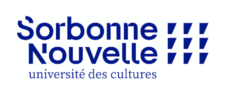

Marie Dholandre
3e année en licence Sciences du langage
| années | expérience |
|---|---|
| 2023 | Stage au LPP |
| 2022 | Caissière en billeterie |
| 2021 | Caissière en billeterie |
Dernières lectures :
- Le cycle des robots, Tome 3 les cavernes d'acier par Isaac Asimov
- Scat syllables and markedness theory par Patricia Shaw
- Langage enfantin et aphasie par Roman Jakobson
- Panorama par Cédric Manche et Loo Hui Phang
- Le portrait de Dorian Gray par Oscar Wilde